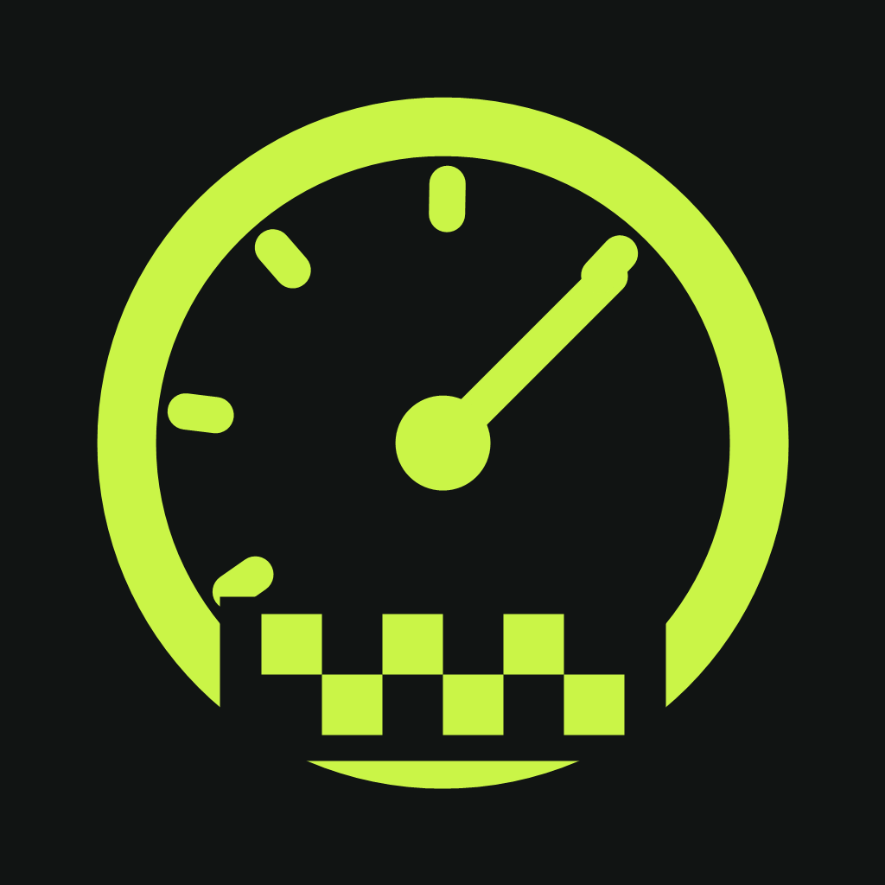

Make every metre count.
Independent TOTAL and TRIP counters. Correct by 1, 10 or 100 metres, or sync the total directly to your roadbook.
TRIPMASTER
RALLYTRIP/ 01NATIVE IPHONE PROJECT · iOS 17+
A rally tripmaster for the seat beside the driver. Keep your distance, follow the roadbook and find your rhythm through every regularity stage.
Updated September 27, 2026: GPS circuit laps, reference profiles, bright pace LEDs and fullscreen views. 49 core tests and the current iPhone simulator build passed. Real-track validation and TestFlight distribution remain pending.
Interface concept · illustrative values, not live GPS
01 / THE INSTRUMENTS
Separate tools for distance, timing and the next instruction.
Independent TOTAL and TRIP counters. Correct by 1, 10 or 100 metres, or sync the total directly to your roadbook.
TRIPMASTERSet a regularity speed plan with multiple changes. Target time is calculated segment by segment, with a signed time deviation.
REGULARITYCombine multiple reference runs, convert already calibrated readings, or enter a factor directly. Keep vehicle profiles and a history of calibration changes.
CALIBRATIONAdd kilometre points and direction notes. View recorded routes on a map and export saved GPS tracks as GPX files.
ROUTE & ROADBOOKSet a GPS start/finish point and direction. The first complete lap sets your reference; following laps show the difference. Save the reference and use fullscreen for the essential instruments.
GPS CIRCUIT LAPSBlue LEDs mean ahead, orange behind and green within ±0.5 s. Try the separate 628 m circuit demo at 1×, 2× or 5× with adjustable speed and automatic lap crossings.
PACE LEDS & CIRCUIT DEMO02 / THE FIRST RUN
The app is a native iPhone project. Use a Mac with Xcode to build it; the included demo mode lets you explore without driving.
Get the source projectUnzip the repository on a Mac and open RallyTrip/RallyTrip.xcodeproj inside the extracted repository. The project at the repository root is an older copy. Select the RallyTrip scheme and an iPhone simulator.
Run the app, then enable Einstellungen → Demo-Modus. Choose Tripmaster → Fahrt starten or Regularity → WP starten. For circuit testing, open Rundstrecke → Rundstrecken-Demo, choose 48 km/h and 5×, and start GPS lap detection. After the reference lap, try 44 or 52 km/h. The app interface is in German.
Select your signing team in Xcode and run on your device. Allow precise location access for GPS measurement. The included README covers testing and setup.
03 / PROJECT STATUS
September 27, 2026: 49 core tests passed on macOS. The latest iPhone simulator build succeeded and launched. An earlier GPS/demo version was installed and launched on an iPhone 13 Pro; this does not validate the newest changes on real hardware.
Visual checks, real circuit laps, background GPS behaviour and paired Apple Watch testing remain open. Android is a development snapshot. TestFlight is not available.
LEDs compare elapsed time at equal measured lap distance, not identical map positions. The ±0.5 s green band is a display threshold, not guaranteed GPS accuracy.